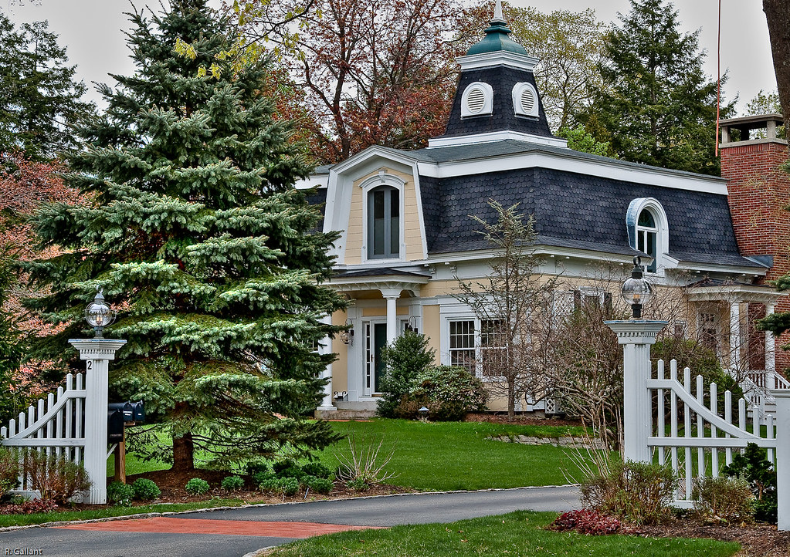

Okay so I used to live in this big beautiful house that was a nice pale color outside with a pretty grey roof. We had a big back yard with a swing set and lake, every night I would let Jesssica and Adam swing before bed. Even though they weren't supposed too. It was in a small town areound 2,000 so nothing ever reallly happened.

"Exeter yellow house" by rgallant_photography is licensed under CC BY 2.0